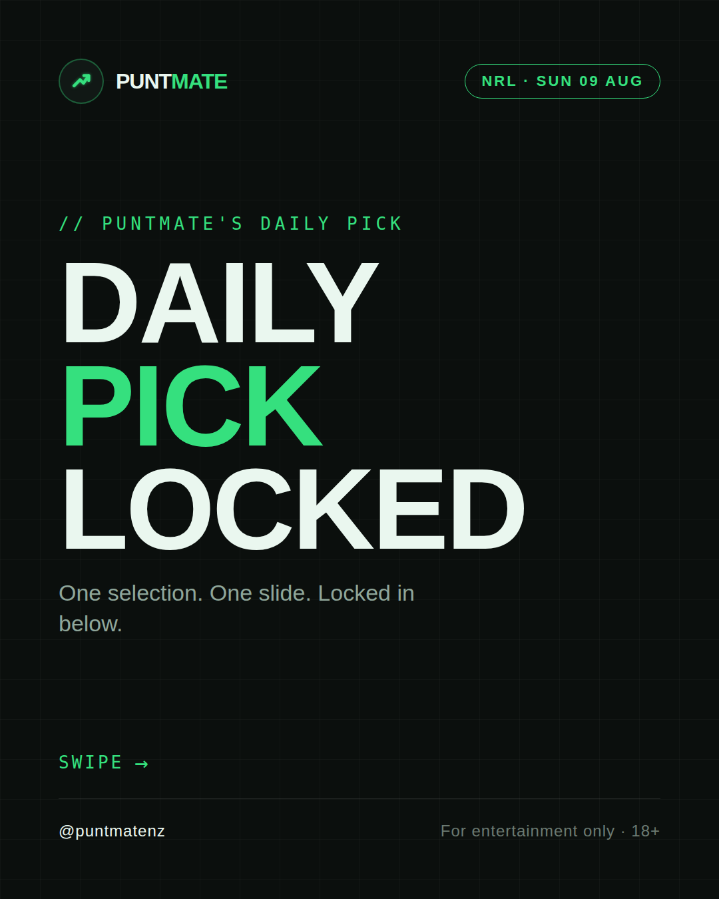
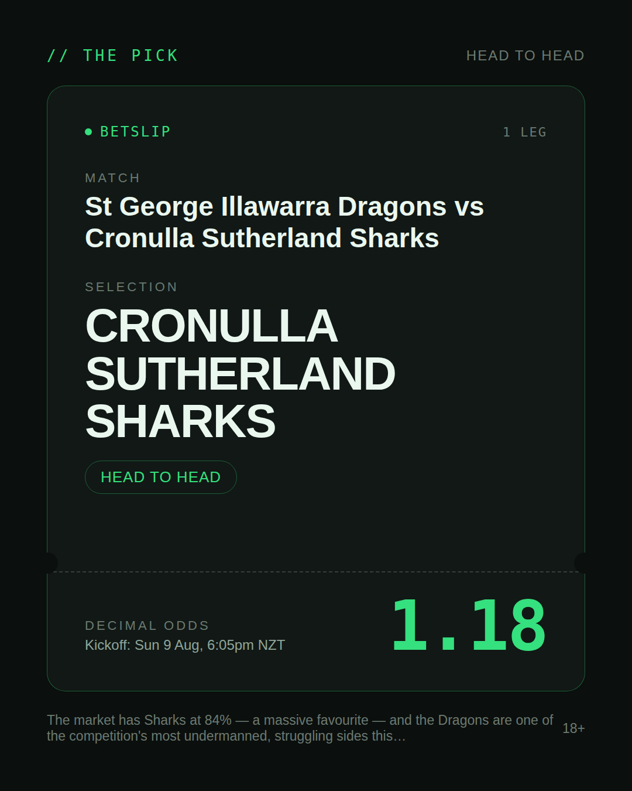
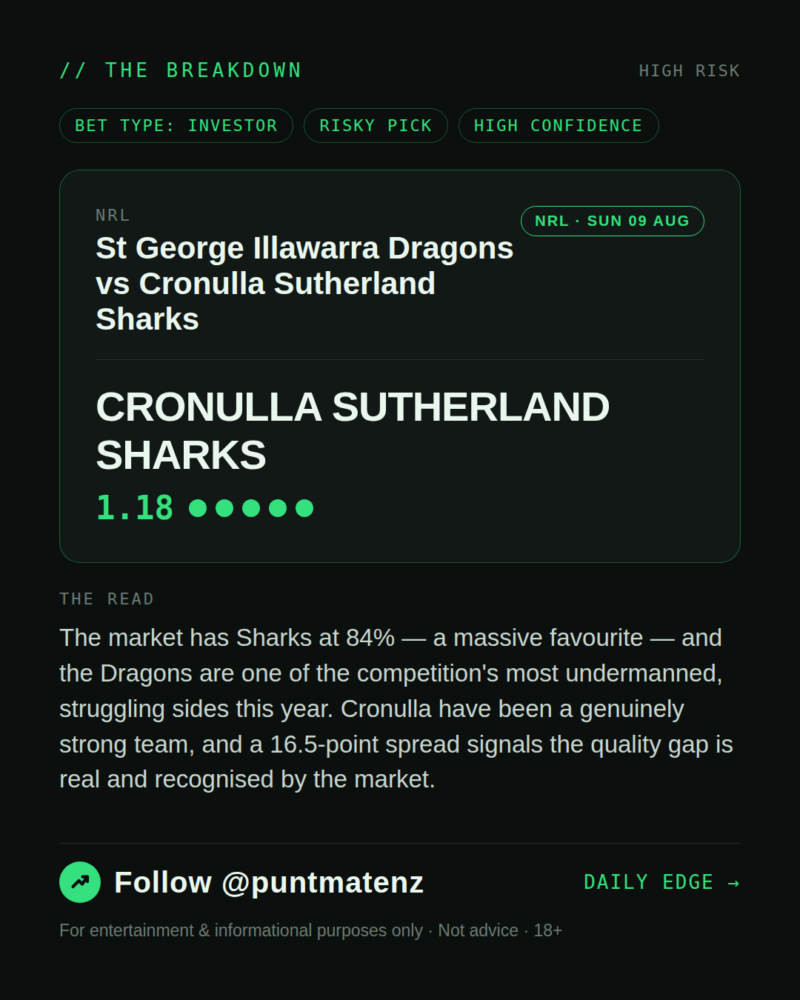
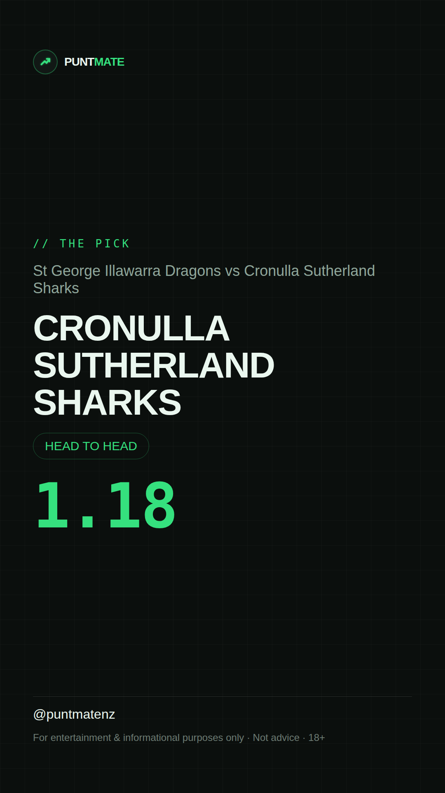

*🎯 PUNTMATE NZ — NRL* 🏟 St George Illawarra Dragons vs Cronulla Sutherland Sharks *PICK:* CRONULLA SUTHERLAND SHARKS *ODDS:* 1.18 (Head to Head) *BET TYPE: INVESTOR* _The market has Sharks at 84% — a massive favourite — and the Dragons are one of the competition's most undermanned, struggling sides this year. Cronulla have been a genuinely strong team, and a 16.5-point spread signals the quality gap is real and recognised by the market._ ────────────────── 📲 Join Telegram for daily picks ⚠️ For entertainment & informational purposes only. Not advice. 18+.
🎯 NRL — St George Illawarra Dragons vs Cronulla Sutherland Sharks CRONULLA SUTHERLAND SHARKS @ 1.18 (Head to Head) BET TYPE: INVESTOR This one's about as close to a sure thing as sport gets — the numbers stack up and the price still pays. The market has Sharks at 84% — a massive favourite — and the Dragons are one of the competition's most undermanned, struggling sides this year. Cronulla have been a genuinely strong team, and a 16.5-point spread signals the quality gap is real and recognised by the market. Follow for daily value picks → @puntmatenz ⚠️ For entertainment & informational purposes only. Not advice. 18+. #PuntmateNZ #SportsBetting #NZTAB #NRL
| has_pick | True |
| pick_id | 2026-08-08_St_George_Illawarra_Dragons_vs_Cronulla_Sutherland_Sharks |
| run_id | 31274495227 |
| generated_at | 2026-08-08T19:31:37.072579+00:00 |
| post_date | 2026-08-08 |
| match | St George Illawarra Dragons vs Cronulla Sutherland Sharks |
| sport | rugbyleague_nrl |
| sport_label | NRL |
| market | Head to Head |
| selection | CRONULLA SUTHERLAND SHARKS |
| odds | 1.18 |
| bet_type | INVESTOR_BET |
| bet_type_label | BET TYPE: INVESTOR |
| bet_type_reason | This one's about as close to a sure thing as sport gets — the numbers stack up and the price still pays. The market has Sharks at 84% — a massive favourite — and the Dragons are one of the competition's most undermanned, struggling sides this year. Cronulla have been a genuinely strong team, and a 16.5-point spread signals the quality gap is real and recognised by the market. |
| classification | RISKY_PICK |
| risk | RISKY_PICK |
| confidence | HIGH |
| confidence_label | HIGH |
| final_explanation | The market has Sharks at 84% — a massive favourite — and the Dragons are one of the competition's most undermanned, struggling sides this year. Cronulla have been a genuinely strong team, and a 16.5-point spread signals the quality gap is real and recognised by the market. |
| public_caution | Keep this one light — the value's there but so is the uncertainty. |
| theme | night |
| carousel_paths | ['data/review/2026-08-08_St_George_Illawarra_Dragons_vs_Cronulla_Sutherland_Sharks/cover.png', 'data/review/2026-08-08_St_George_Illawarra_Dragons_vs_Cronulla_Sutherland_Sharks/tip.png', 'data/review/2026-08-08_St_George_Illawarra_Dragons_vs_Cronulla_Sutherland_Sharks/breakdown.png'] |
| carousel_urls | ['https://raw.githubusercontent.com/kingofthecastle24/puntmate/main/data/cards/2026-08-08_St_George_Illawarra_Dragons_vs_Cronulla_Sutherland_Sharks_night_1_cover.png', 'https://raw.githubusercontent.com/kingofthecastle24/puntmate/main/data/cards/2026-08-08_St_George_Illawarra_Dragons_vs_Cronulla_Sutherland_Sharks_night_2_tip.png', 'https://raw.githubusercontent.com/kingofthecastle24/puntmate/main/data/cards/2026-08-08_St_George_Illawarra_Dragons_vs_Cronulla_Sutherland_Sharks_night_3_breakdown.png'] |
| story_path | data/review/2026-08-08_St_George_Illawarra_Dragons_vs_Cronulla_Sutherland_Sharks/story.png |
| story_url | https://raw.githubusercontent.com/kingofthecastle24/puntmate/main/data/cards/2026-08-08_St_George_Illawarra_Dragons_vs_Cronulla_Sutherland_Sharks_night_story.png |
| intended_platforms | ['telegram', 'instagram_feed', 'instagram_story', 'facebook'] |
| workflow_state | GENERATED |
| has_punter_multi | False |
| has_gambler_multi | False |
| has_degenerate_multi | False |